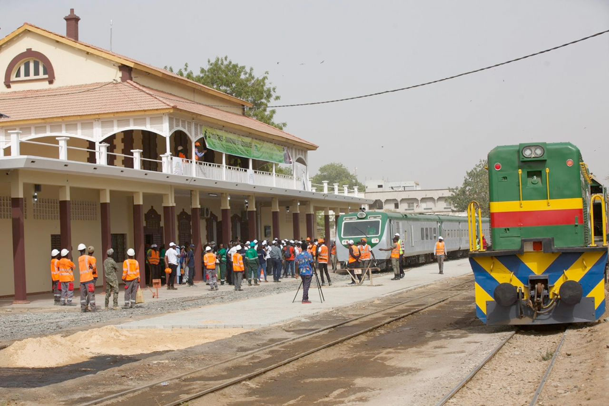
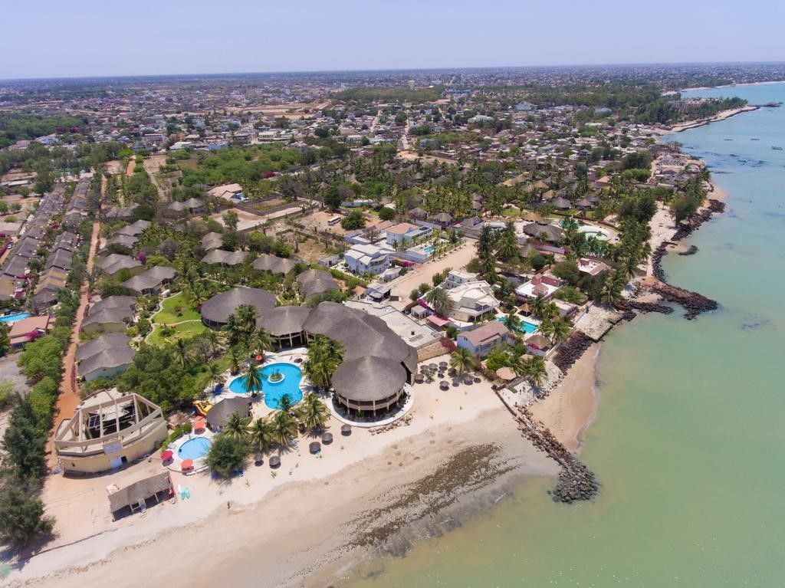
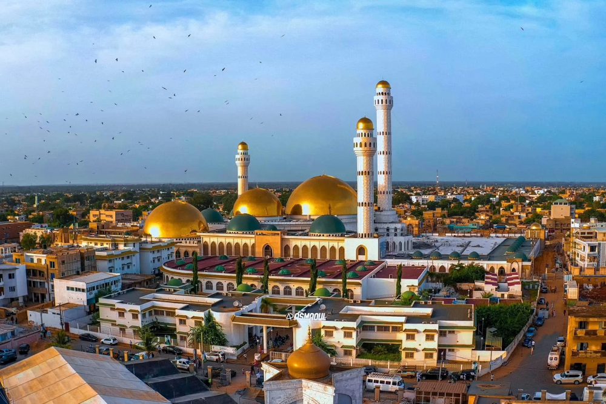

Tourisme d'affaires, balnéaire et religieux — au cœur du Sénégal
Authenticité · Culture · Patrimoine · Modernité
Le tourisme constitue l'un des secteurs les plus importants de la région. Il contribue à l'économie régionale à travers toutes les activités connexes et constitue un secteur à forte création d'emplois. La région bénéficie d'immenses potentialités liées à sa position stratégique, ses sites touristiques, ses grands hôtels et ses belles plages — répartis entre trois départements aux visages bien distincts.
Chef-lieu de la région, le département de Thiès concentre 8,3% des réceptifs hôteliers. Né du village sérère de Dianxène et bâti autour de la ligne Dakar-Bamako, son tourisme reste tourné vers les séminaires et événements professionnels — la Capitale du Rail.
Découvrir Thiès en détail

Avec 90,2% des réceptifs hôteliers de la région, Mbour concentre l'essentiel du tourisme grâce à sa façade sur la Petite Côte. Ancien village lébou devenu station balnéaire dans les années 1970 avec Saly Portudal, il regroupe aujourd'hui plusieurs sites réputés.
Avec seulement 1,5% des réceptifs hôteliers, Tivaouane brille surtout par son rayonnement spirituel : siège de la confrérie Tijaniyya fondée au XIXe siècle par El Hadji Malick Sy, elle accueille chaque année le grand Gamou, l'un des plus grands pèlerinages du Sénégal.
Découvrir Tivaouane en détail
La région de Thiès jouit d'un climat sahélien avec deux saisons bien marquées. La saison sèche (novembre–mai) est idéale pour le tourisme, avec des températures agréables et un ciel bleu permanent — que ce soit sur les plages de la Petite Côte, à Thiès-ville ou à Tivaouane.
Un avant-goût de ce qui vous attend à Thiès, Mbour et Tivaouane — le reste se découvre sur place ou sur la page de chaque département.
Un aperçu du type d'expériences qui vous attendent — le programme complet est sur la page de chaque département.
Un aperçu par département — la liste complète des 864 réceptifs hôteliers de la région est disponible sur la page dédiée.
Ancienne demeure coloniale rénovée avec goût, au cœur du quartier historique. Architecture d'époque, mobilier soigné et atmosphère unique.
Complexe hôtelier en bord de plage à Saly Portudal, piscine, restaurant et accès direct au sable fin de la Petite Côte.
Hébergement simple et accueillant à quelques pas des lieux saints, prisé des pèlerins lors du Gamou et des visiteurs de passage.
Un aperçu par département — la carte complète des adresses gourmandes se trouve sur la page dédiée.
L'incontournable grillade de rue thiéssoise. Brochettes fumantes, agneau grillé et thiou dégustés en plein air dans une atmosphère conviviale.
Poissons et fruits de mer grillés servis face à l'océan, dans une ambiance décontractée typique de la Petite Côte.
Table familiale servant plats traditionnels et thé à la menthe, très fréquentée par les pèlerins de passage lors du Gamou.
Thiès m'a complètement surpris. J'y suis allé par deux fois. Les avenues bordées d'arbres, le marché artisanal, les artisans authentiques… C'est l'exact opposé de Dakar — une vraie bouffée d'air frais !
La visite des manufactures MSAD est une expérience inoubliable. Voir ces tapisseries naître sous les doigts des liciers, c'est un art vivant d'une beauté absolue. Une destination culturelle majeure.
La gare coloniale de Thiès est un véritable bijou architectural. L'atmosphère du quartier Ballabey avec ses vieilles demeures coloniales est hors du temps. Je comprends pourquoi on parle d'une future capitale.
Notre géoportail intègre des données SIG (Système d'Information Géographique) pour vous offrir une exploration cartographique interactive et précise de la région de Thiès. Aperçu ci-contre sur Thiès-ville ; la couverture de Mbour et Tivaouane sera ajoutée avec leurs pages dédiées.
Couches géospatiales superposables
Sites, services, hébergements
Routes et liaisons TER
Statistiques et zonages
De la ligne Dakar-Niger aux ateliers de réparation, comment le chemin de fer a façonné l'identité et l'essor économique de la Capitale du Rail sénégalaise.
Comment les Manufactures de Senghor perpétuent un savoir-faire d'exception reconnu dans les plus grands musées du monde.
Du thiéboudienne au yassa, partez à la découverte des saveurs authentiques de la cuisine sénégalaise dans les marchés de la ville.
Notre équipe est disponible pour vous aider à organiser votre séjour à Thiès, répondre à vos questions et vous recommander les meilleures expériences.
Thiès, Région de Thiès
République du Sénégal
14.7886° N, 16.9260° W
TER Dakar–Thiès : ~45 min
Route N1 depuis Dakar : 70 km
AIBD à proximité immédiate
Saison sèche : Novembre – Mai
Température moyenne : 25,7°C
Précipitations faibles
tourisme@thies.sn
+221 33 900 00 00